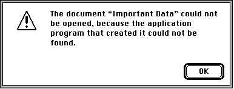
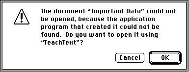
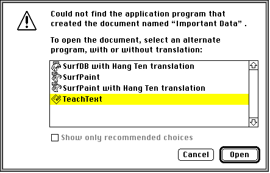
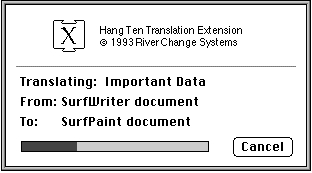
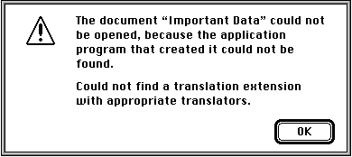

Legacy Document
Important: The information in this document is obsolete and should not be used for new development.
Important: The information in this document is obsolete and should not be used for new development.


Opening Documents From the Finder
A user can ask the Finder to open a document in several ways, for example, by selecting the document's icon and choosing the Open command in the Finder's File menu or (more typically) by double-clicking the document's icon. If Macintosh Easy Open is not present in the operating environment and the user attempts to open a document created by an application that isn't available, the Finder displays the alert box shown in
Figure 7-1.Figure 7-1 The Finder's application-unavailable alert box
 If the document the user wants to open is of type
'TEXT'or'PICT'and the creator application cannot be found, the Finder instead displays the alert box shown in
Figure 7-2, which allows the user to try to open the document using the TeachText application.Figure 7-2 The application-unavailable alert box for
'TEXT'and'PICT'documents When Macintosh Easy Open is available, it intercedes in the Finder's document-opening process. For example, if the user attempts to open the document "Important Data" (of type
'SURF') created by the SurfWriter application and that application isn't available on the user's system, the Finder displays a dialog box like the one shown in Figure 7-3. This dialog box contains a list of all applications that can open a document of that type.Figure 7-3 The translation choices dialog box
 In this dialog box, the user can select a translation path from the document's current format to one that can be opened by some application that is available. In this way, the user can open documents created by missing or unavailable applications.
Macintosh Easy Open lists two kinds of applications in the dialog box shown in
Figure 7-3, applications that can open the file natively (that is, in its current format) and those that can open the document only after the document has been translated into some other format. When the user selects an application requiring translation and clicks the Open button, Macintosh Easy Open calls the appropriate translation extension to translate the original document. During the translation, Macintosh Easy Open displays a translation progress dialog box, as shown in Figure 7-4.Figure 7-4 A translation progress dialog box
 The progress dialog box displays the name of the document being translated, its original format, and its target format. The top portion of the dialog box shows an advertisement provided by the particular translation extension that Macintosh Easy Open called to perform the translation. (In this case, the Hang Ten Translation Extension is being used.) It's possible that two or more translation extensions can translate the same original document; if so, they'll all be listed in the translation choices dialog box.
If none of the available translation extensions can translate a particular document, the Finder may present a modified version of the application-unavailable alert box, shown in Figure 7-5.
Figure 7-5 The modified application-unavailable alert box
 To have another application open a document, the user can drop-launch the document. (To drop-launch a document is to drag the document's icon onto the application's icon.) If Macintosh Easy Open knows how to translate the document into a format that can be opened by that application, the Finder highlights the application's icon as the user drags the document icon over it. When the user drop-launches the document, Macintosh Easy Open displays a dialog box that is similar to the translation choices dialog box (see Figure 7-3).